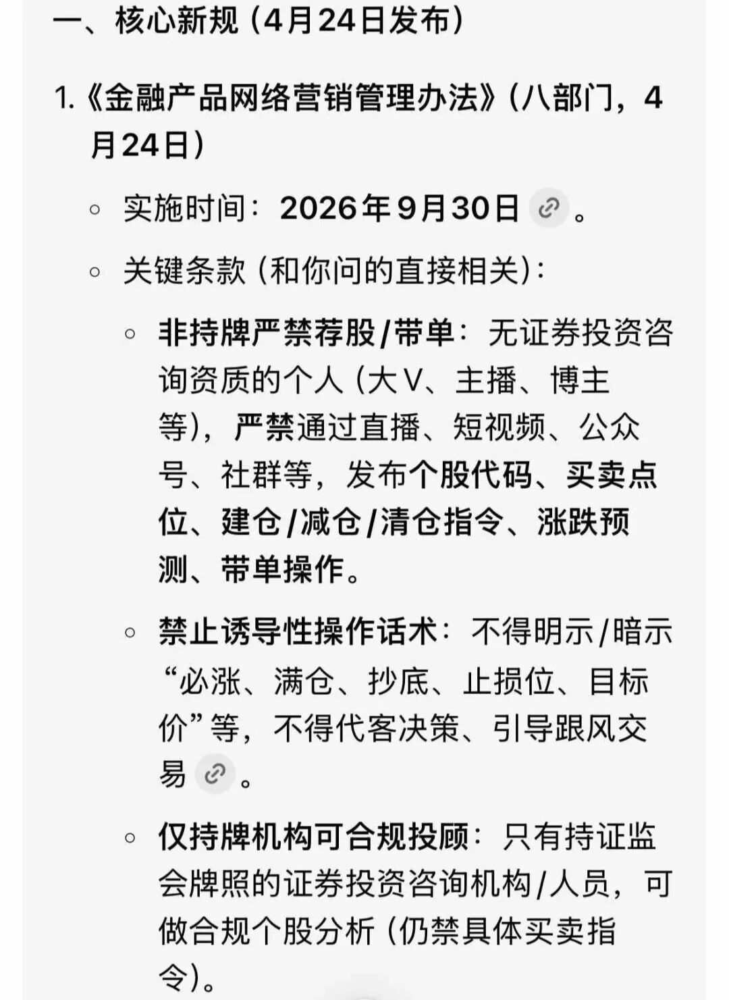

天玑 · 金渐成 ·
从这周开始，我陆续在见一些老朋友们。
一是准备出去陪娃们读书了，二是随着俩小娃的长大，陪伴时间增多，更新也只能越来越少。当然，更新变少还有一个原因，是监管新规：

后续做任何的个股/企业分析，投资具体操作等，无论是做科普，还是做知识付费等，都需要资质。
最麻烦的可能是证明自己跟分析的个股等没有利益关系。所谓的利益关系，一是收广告费等自媒体行业的常规操作，二是你有持仓这只个股，也属于有利益关系。
目前业内的解决方案是挂靠，即作者挂靠在公募基金等机构旗下，并持有从业资格证等牌照。
我目前懒得去弄了，本来也没有从中有任何收益，不能写就不写，对我没什么影响。
因此，一个月前已经在开始做合规准备，后续美股具体个股的分析等会大幅度砍掉。
对于投资来说，尽量做好自己的投资体系，体系化才能让自己进退有序，不要太极端和单一选项。
储蓄+保单+不动产+股票+债券等组合，尽量搭配得当。储蓄又分为活期+定存等，不动产可以兼顾内外，股票尽量选“第一兼唯一”，债券尽量选最优质的国债或美债等。
比如股票，不懂选择的就看标普500这类宽基指数，虽然涨得慢一些，但跌幅往往也比较小。2000年互联网泡沫破裂，它只用了7年就完全修复高点。
纳指100整体相对标普500来说较单一，2000年互联网泡沫破裂，跌了整整15年，跌幅83%，中间还叠加了08年次贷危机又跌了3年，跌幅50%…
做任何事都尽量稳一点，不要太极端和激进，大多数人没有经历过那个时期，只从2015年后的经历和眼光来看纳指100和标普500的涨幅。
普通人经历过2022年下跌25-37.5%都有很多人拿不住，更别说连续跌15年和7年，人生能有几个15年？
做投资稳健些，资产配置和框架尽量做好，不要在单一项上的占比过高，比如房产或股票。不能只看着吃肉的时候，也要记得挨打的时候。
先做好防守型，再配置稳健型，然后是进取型，最后如果有余力再添置少许激进型。这类资产我写过详细的介绍：量体裁衣，如鱼得水~
以海外资本市场为例，比如七巨头+标普500宽基指数ETF+美债，就是一个循环体系，七巨头负责进取，宽基指数负责长期定投，美债负责保值+生息。如果七巨头跌了，美债和宽基指数的派息分红可以调配去加仓；如果七巨头涨到了高位，可以适当减仓用于下次下跌时适当加仓。
说白了，就是构筑现金流，没有现金流会很危险，很难扛住大的波动。有充足现金流，波动再大，也胸有成竹。
因此，怎么构筑现金流，就需要结合自己的情况，找到适合自己的方式。
不极端，不单一，尽量构筑好资产体系和现金流。太单一项，波动大时，就很难拿住，很容易误操作。
投资，最重要的是守住财富，在守住财富的基础上再图取收益。也就是通常所说的“先保值，再增值”。
人生能把握住少数几个机会，基本上就不太愁钱的事。但机会往往伴随着风险，所以要做好风险管控。
很多人发家后又迅速败落，核心原因就在于风控没有做好，风控是着手于当下，放眼于未来。
投资这种事，往往把握住的机会少，错过的机会多。
像极了感情，千金难买少年时，常常迷失在时光的夹缝中，那未来或许得到了期许，但失去的永远失去。
这趟到北京，见了三位朋友：
一位是以前的学长，他现在自己做私募，做得还不错，就是人自我要求比较高，整个人处于相对紧绷的工作状态，难以兼顾家庭生活和工作。我约他打了一场网球，他坦言自己很久没有这么放松过，还聊了一些其余的话题。
一位是我的引路人。我刚进入自媒体行业时，是菜鸡一枚，很多的细节问题都是咨询她，比如监管类的坑等，学到的很多；请教问题六七年，直到三年半前才在上海见了一面，然后就是这次。发自内心地感谢她，如果没有她的指引，咱们现在可能没有机会在这唠嗑。
一位是自媒体博主。我是第一次跟自媒体行业的博主见面，他很真诚很纯粹的一个人，这种人做朋友很nice，浙江的老乡。相比别人对他笔耕不辍十余年的赞叹，我更欣赏他强大的心力，每天面对生物的多样性还能保持好的心态和松弛感。
我有很多年没怎么在北京好好转转了，每次到北京都是行程匆匆，这次转了转，发现变化还是挺大的。
最大的变化是“人”，年轻人身上少了以往透体而出的澎湃朝气和生命力。
只能感叹：环境远比你个人的努力重要的多，并且环境的变化，是个人根本无法抗衡的。
我经常说：人的认知，是无法超越自己经历的，看不到超过自身所处层次的东西。可惜的是，我们总是习惯于用有限的认知，去评论无限的世界。
你月收入10万，别人问你时，你回答月入3万，别人觉得你装逼，只有你自己知道自己已经很低调了。这就是“人的认知，无法超越自己经历的，看不到超过自身处所层次的东西”。
咱们的人口基数太大，月收入2万就可以在国内排进1%，但在网络上年入百万还会被说少，其实年入百万可以在国内排进0.001%…
大多数人对钱没什么概念，特别是投资做久了，动不动大手笔投入，赚的钱也只是账面上的数字变化（浮盈）。只有真正落袋为安拿去消费时，才能具体感受到一百万是多大一笔钱，购买力有多大。
这个世界很大，天外有天，人外有人。看过世界的大和复杂，就知道自己有多普通多平凡。
新中产很容易飘，特别是刚开始年收入30-300万这个区间不久的群体，看谁都觉得别人是傻缺，只有自己最牛掰。尽量戒骄戒躁，低调些，眼光于顶容易给自己惹麻烦。
我们时常会觉得孤独，孤独本就是常态，无可避免，习惯就好。也不刻意去交朋友，同频的自然是朋友。
我们都会珍惜跋山涉水去见的人，不会珍惜跋涉水来见自己的人。
我想，以后尽量不再拉黑读者了，除非对方实在让人讨厌。目前的大环境，人很容易偏激和极端，尽量让人有个情绪的宣泄渠道，也挺好的。
网络把社会各个阶层的人聚集在一起，给人一种我们生活在一个世界的错觉，实际上生活中根本见不到。
就这样吧。